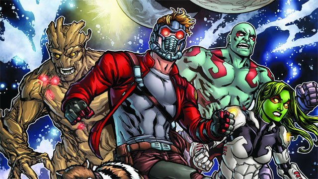
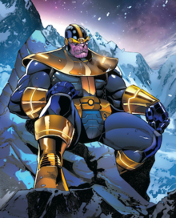

Characters in Avengers Infinity Wars
Avengers
_vol_3_num_38.jpg)
The Avengers, are a team of extraordinary individuals, with special abilities and the will to do good in the world. The teams purpose is to protect the planet and its people from both domestic and extraterrestrial threats. They are a nonprofit organization privately funded by industrialist Tony Stark's Maria Stark Foundation The group is recognized as a peacekeeping force by the National Security Council of the United States of America, the United Nations; Security Council and S.H.I.E.L.D. The team functions with the peaceful interests of the whole world rather than a specific country or organization as stated in the Avengers Charter.
Gaurdians of the Galaxy
The Guardians of the Galaxy is a group of heroes who opposed the Phalanx conquest of the Kree system (and many who had opposed Annihilus' incursion into their universe), and banded together in an attempt to prevent any further catastrophes from ever occurring.
Thanos
Thanos was one of the last sons of A'Lars, progenitor of the second colony of Eternals on Titan, and Sui-San, the last survivor of the original settlement of Eternals on Titan. Born with grey, hide-like skin and a massive body due to being born with the Deviant Syndrome, Thanos was a morose child who became obsessed with the concept of death. Through bionic implementation and long hours of meditation, Thanos augmented his Eternal strengths and powers so that his abilities surpassed those of all other Titanian Eternals.